Introducere
Când lucrați la un document cu mai multe pagini, pot exista momente în care doriți să aveți mai mult control asupra modului în care textul curge exact. Pauza poate fi de ajutor în aceste cazuri. Există multe tipuri de întreruperi din care puteți alege, în funcție de ceea ce aveți nevoie, inclusiv întreruperi de pagină, întreruperi de secțiune și întreruperi de coloană.
Pentru a insera o întrerupere de pagină:În exemplul nostru, anteturile secțiunilor de pe pagina trei ( Venituri lunare și De către client ) sunt separate de tabelul din pagina de mai jos. Și, deși am putea apăsa Enter până când acel text ajunge în partea de sus a paginii patru, ar putea fi mutat cu ușurință dacă am adăuga sau șterge ceva într-o altă parte a documentului. În schimb, vom insera o întrerupere de pagină.
- Plasați punctul de inserare acolo unde doriți să creați întrerupere de pagină. În exemplul nostru, îl vom plasa la începutul titlurilor noastre.
- În fila Inserare, faceți clic pe comanda Pagină. De asemenea, puteți apăsa Ctrl+Enter de pe tastatură.
- Spargerea de pagină va fi inserată în document, iar textul se va muta pe pagina următoare.
- În mod implicit, pauzele sunt invizibile. Dacă doriți să vedeți pauzele din documentul dvs., faceți clic pe comanda Afișare/Ascunde din fila Acasă.
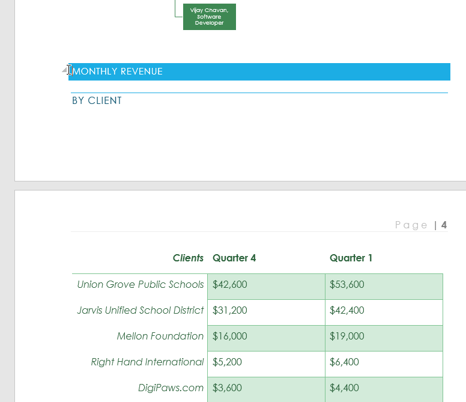
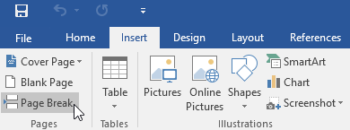
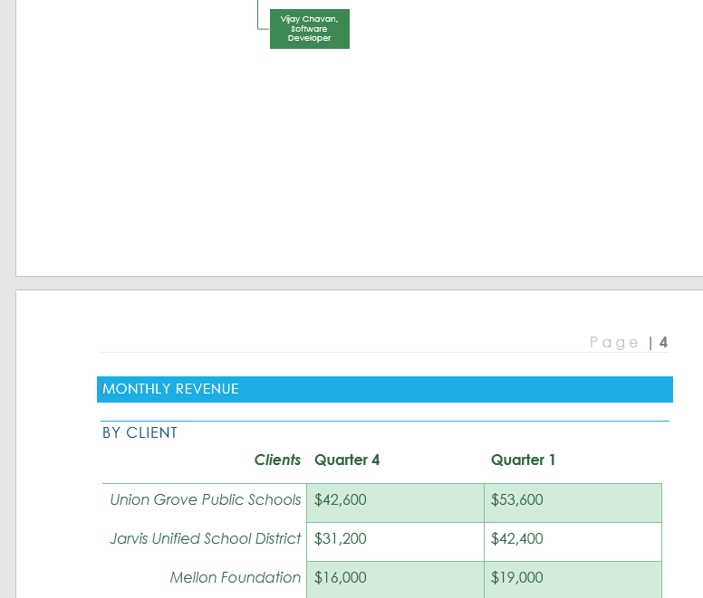
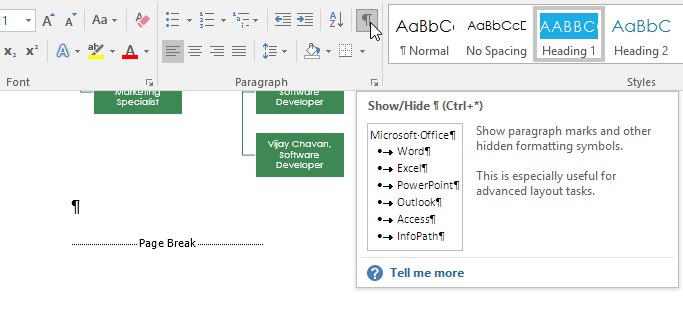
Separările de secțiune creează o barieră între diferitele părți ale unui document, permițându-vă să formatați fiecare secțiune în mod independent. De exemplu, poate doriți ca o secțiune să aibă două coloane fără a adăuga coloane întregului document. Word oferă mai multe tipuri de pauze de secțiune.
- Pagina următoare : această opțiune inserează o pauză de secțiune și mută textul după pauză în pagina următoare a documentului.
- Continuu : această opțiune inserează o pauză de secțiune și vă permite să continuați să lucrați pe aceeași pagină.
- Pagină pară și pagină impară : Aceste opțiuni adaugă o pauză de secțiune și mută textul după pauză la următoarea pagină pară sau impară. Aceste opțiuni pot fi utile atunci când trebuie să începeți o nouă secțiune pe o pagină pară sau impară (cum ar fi în cazul unui nou capitol dintr-o carte).
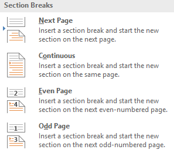
În exemplul nostru, vom adăuga o pauză de secțiune pentru a separa un paragraf dintr-o listă cu două coloane.
- Plasați punctul de inserare acolo unde doriți să creați pauză. În exemplul nostru, îl vom plasa la începutul paragrafului pe care dorim să-l separăm de formatarea pe două coloane.
- În fila Aspect pagină , faceți clic pe comanda Pauza, apoi selectați pauză de secțiune dorită din meniul derulant. În exemplul nostru, vom selecta Continuu, astfel încât paragraful nostru să rămână pe aceeași pagină cu coloanele.
- În document va apărea o pauză de secțiune.
- Textul de dinainte și de după pauză de secțiune poate fi acum formatat separat. În exemplul nostru, vom aplica paragrafului formatare pe o singură coloană.
- Formatarea va fi aplicată secțiunii curente a documentului. În exemplul nostru, textul de deasupra pauzei de secțiune folosește formatarea pe două coloane, în timp ce paragraful de sub pauză folosește formatarea pe o singură coloană.
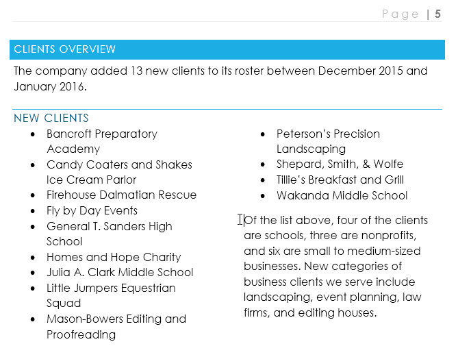
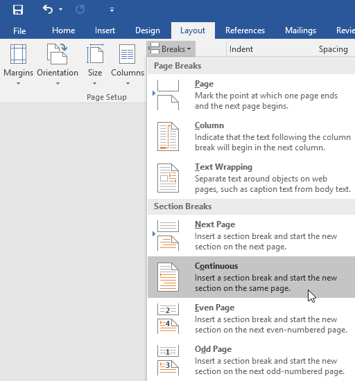
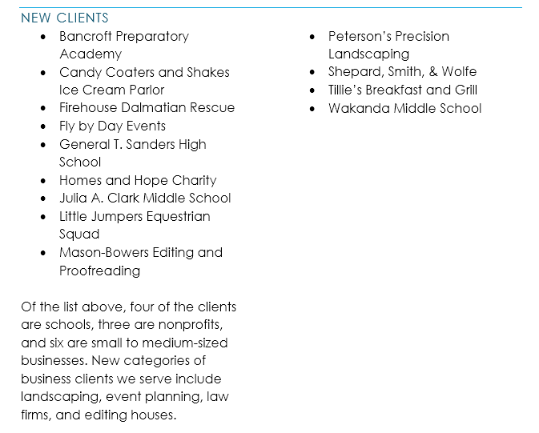
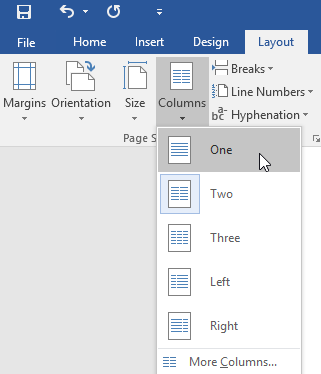
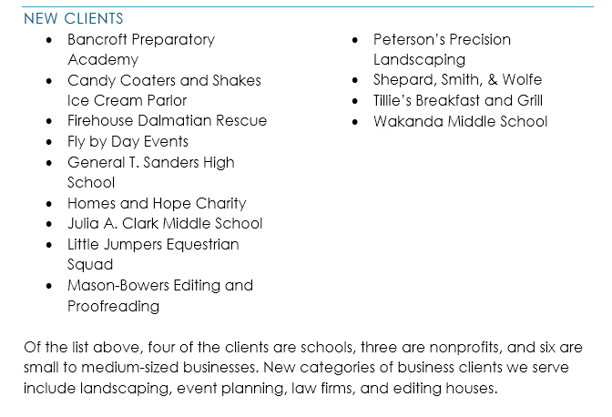
Când doriți să formatați aspectul coloanelor sau să modificați înfășurarea textului în jurul unei imagini, Word oferă opțiuni suplimentare de pauză care vă pot ajuta:
- Coloană: atunci când creați mai multe coloane, puteți aplica o întrerupere a coloanei pentru a echilibra aspectul coloanelor. Orice text care urmează pauzei de coloană va începe în coloana următoare. Pentru a afla mai multe despre cum să creați coloane în documentul dvs., consultați lecția noastră despre Coloane.
- Împachetarea textului: Când textul a fost înfășurat în jurul unei imagini sau al unui obiect, puteți utiliza o pauză de împachetare a textului pentru a încheia împachetarea și a începe să tastați pe linia de sub imagine. Revizuiți lecția noastră despre imagini și text pentru a afla mai multe.
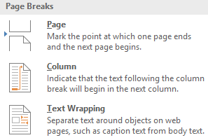
În mod implicit, pauzele sunt ascunse. Dacă doriți să ștergeți o pauză, mai întâi va trebui să afișați pauzele în documentul dvs.
- În fila Acasă, faceți clic pe comanda Afișare/Ascunde.
- Localizați pauză pe care doriți să o ștergeți, apoi plasați punctul de inserare la începutul pauzei.
- Apăsați tasta Ștergere. Pauza va fi ștearsă din document.

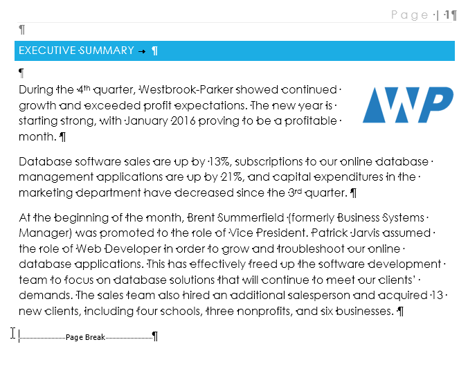